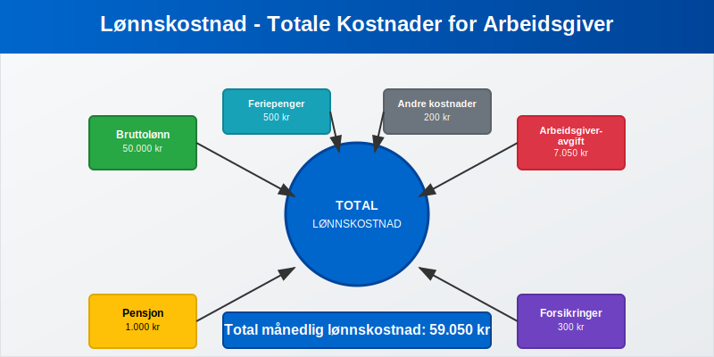
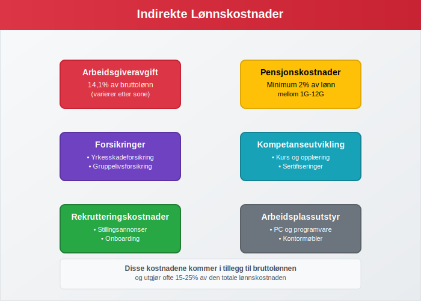
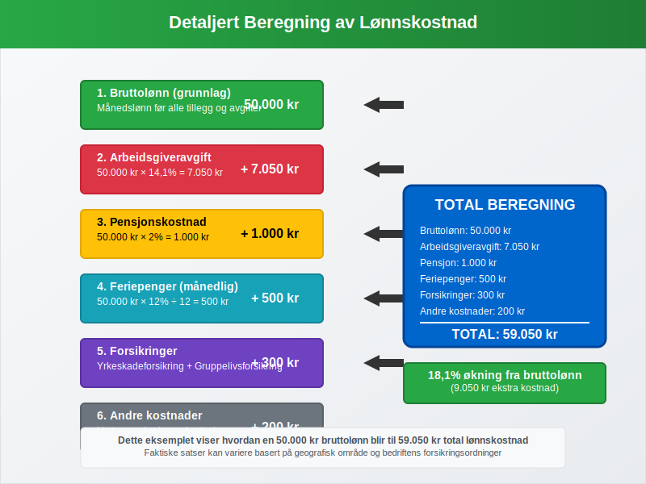
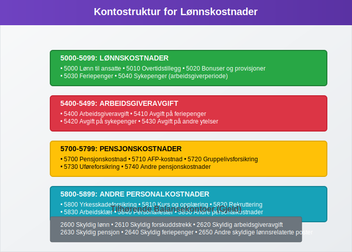
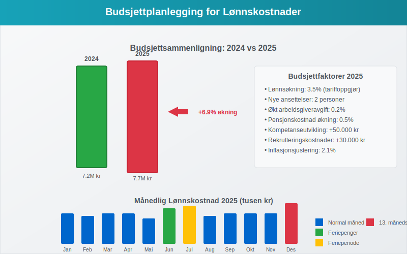
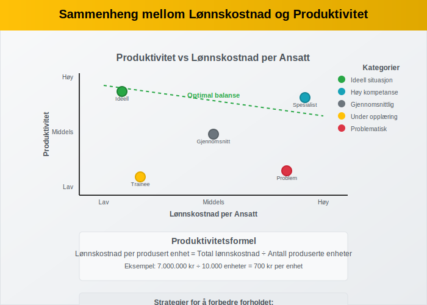
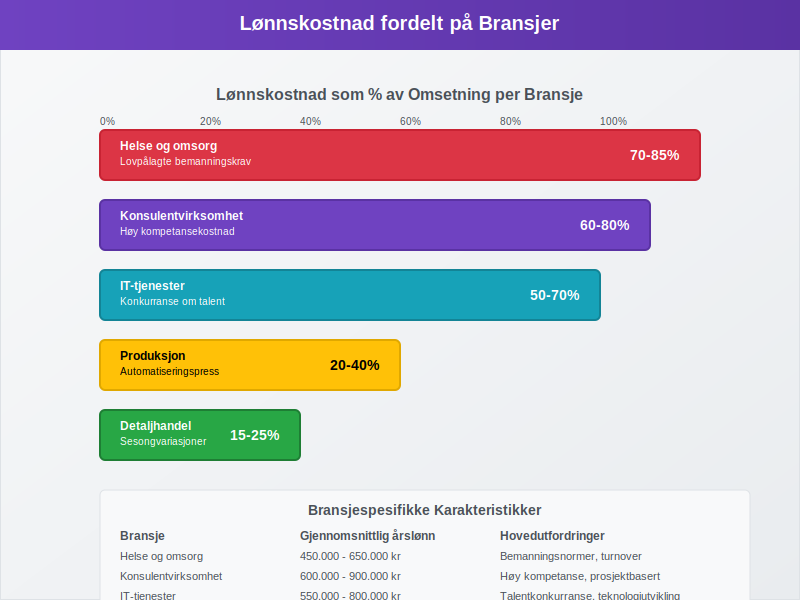

Lønnskostnad er den totale kostnaden en arbeidsgiver har for sine ansatte, og omfatter langt mer enn bare den utbetalte lønnen. Lønnskostnader inkluderer bruttolønn, arbeidsgiveravgift, pensjonskostnader, forsikringer og andre personalrelaterte utgifter. For mange bedrifter utgjør lønnskostnader den største kostnadsposten og kan representere 50-70% av de totale driftskostnadene.
Se Hva er Lønn.

Komponenter i Lønnskostnad
Lønnskostnad består av flere komponenter som sammen utgjør den totale kostnaden for arbeidsgiveren:
Direkte Lønnskostnader
- Bruttolønn - den faktiske lønnen til den ansatte før trekk
- Fastlønn eller produksjonslønn avhengig av ansettelsesform
- Provisjon for prestasjonsbasert lønn
- Tungt salær for betydelige honorarer og spesielle engasjementer
- Overtidstillegg og andre lønnstillegg
- Feriepenger (12% av opptjent lønn)
- Sykepenger som arbeidsgiveren dekker (arbeidsgiverperioden)
Indirekte Lønnskostnader

- Arbeidsgiveravgift (14,1% i de fleste områder) - som utgjør en del av trygdeavgiften til folketrygden
- Pensjonskostnader (minimum 2% av lønn mellom 1G-12G) - se også tjenestepensjon og pensjonsrapportering
- Forsikringer (yrkesskadeforsikring, gruppelivsforsikring)
- Kompetanseutvikling og opplæringskostnader
- Rekrutteringskostnader og onboarding
- Arbeidsplassutstyr og verktøy
Beregning av Total Lønnskostnad
Grunnleggende Beregning
Den totale lønnskostnaden beregnes ved å legge sammen alle komponenter:
Total lønnskostnad = Bruttolønn + Arbeidsgiveravgift + Pensjon + Forsikringer + Andre kostnader
Detaljert Beregningseksempel

Eksempel for en ansatt med månedslønn på 50.000 kr:
| Kostnadskomponent | Beregning | Beløp |
|---|---|---|
| Bruttolønn | 50.000 kr | 50.000 kr |
| Arbeidsgiveravgift | 50.000 × 14,1% | 7.050 kr |
| Pensjon | 50.000 × 2% | 1.000 kr |
| Feriepenger | 50.000 × 12% ÷ 12 | 500 kr |
| Forsikringer | Fast beløp | 300 kr |
| Andre kostnader | Estimat | 200 kr |
| Total månedlig lønnskostnad | 59.050 kr |
Dette betyr at en ansatt med 50.000 kr i månedslønn faktisk koster bedriften 59.050 kr per måned, eller 18,1% mer enn bruttolønnen.
Årlig Lønnskostnad
For å beregne årlig lønnskostnad må man også inkludere:
- 13. månedslønn (hvis aktuelt)
- Ekstra feriepenger ved ferieavvikling
- Bonuser og andre variable tillegg
- Sykepenger utover arbeidsgiverperioden (refunderes delvis)
Lønnskostnad i Regnskapet
Regnskapsmessig Behandling
Lønnskostnader klassifiseres som driftskostnader i resultatregnskapet og føres i følgende kontoklasser:

| Kontotype | Kontonummer | Beskrivelse |
|---|---|---|
| Lønnskostnader | 5000-5099 | Bruttolønn til ansatte |
| Arbeidsgiveravgift | 5400-5499 | Avgift til NAV |
| Pensjonskostnader | 5700-5799 | Pensjon og AFP |
| Andre personalkostnader | 5800-5899 | Forsikringer, kurs, etc. |
Månedlig Bokføring
Typisk bokføring av lønnskostnader:
Debet: Lønnskostnad (5000) 50.000 kr
Debet: Arbeidsgiveravgift (5400) 7.050 kr
Debet: Pensjonskostnad (5700) 1.000 kr
Debet: Andre personalkostnader (5800) 500 kr
Kredit: Skyldig lønn (2600) 45.000 kr
Kredit: Skyldig forskuddstrekk (2610) 5.000 kr
Kredit: Skyldig arbeidsgiveravgift (2620) 7.050 kr
Kredit: Skyldig pensjon (2630) 1.000 kr
Kredit: Skyldig feriepenger (2640) 500 kr
Periodisering og Avsetninger
Lønnskostnader må periodiseres korrekt:
- Opptjente feriepenger avsettes løpende
- 13. månedslønn periodiseres over året
- Bonuser avsettes når de er opptjent
- Sykepenger i arbeidsgiverperioden kostnadsføres umiddelbart
Lønnskostnad og Budsjettering
Budsjettplanlegging

Ved budsjettering av lønnskostnader må følgende faktorer vurderes:
- Lønnsøkninger (typisk 2-4% årlig)
- Nye ansettelser eller reduksjoner
- Endringer i arbeidsgiveravgift eller pensjonssatser
- Overtidsbehov og sesongvariasjoner
- Kompetanseutvikling og kursvirksomhet
Lønnskostnad per Ansatt
| Stillingskategori | Gjennomsnittlig årslønn | Total lønnskostnad | Kostnadsfaktor |
|---|---|---|---|
| Leder | 800.000 kr | 950.000 kr | 1,19 |
| Spesialist | 600.000 kr | 710.000 kr | 1,18 |
| Konsulent | 500.000 kr | 590.000 kr | 1,18 |
| Assistent | 400.000 kr | 470.000 kr | 1,18 |
Optimalisering av Lønnskostnader
Kostnadseffektive Strategier
- Fleksible ansettelsesformer - bruk av deltid og midlertidige stillinger
- Kompetanseutvikling for å øke produktivitet
- Automatisering av rutineoppgaver
- Outsourcing av ikke-kjerneaktiviteter
- Hjemmekontor for å redusere kontorkostnader
Lønnskostnad og Produktivitet

Forholdet mellom lønnskostnad og produktivitet er kritisk for lønnsomhet:
Lønnskostnad per produsert enhet = Total lønnskostnad ÷ Antall produserte enheter
Juridiske Aspekter
Lovpålagte Minimumskrav
- Minstelønn i tariffbundne bransjer
- Arbeidsgiveravgift - obligatorisk for alle arbeidsgivere
- Obligatorisk tjenestepensjon - minimum 2% av lønn mellom 1G-12G
- Yrkesskadeforsikring - lovpålagt for alle ansatte
- Feriepenger - 12% av opptjent lønn
Rapportering og Dokumentasjon
Lønnskostnader må dokumenteres gjennom:
- A-melding til NAV og Skatteetaten
- Årsoppgave for hver ansatt
- Ansattreskontro med detaljert oversikt
- Lønnsslipp til den ansatte
Lønnskostnad i Ulike Bransjer
Bransjespesifikke Forskjeller

| Bransje | Lønnskostnad som % av omsetning | Typiske utfordringer |
|---|---|---|
| Konsulentvirksomhet | 60-80% | Høy kompetansekostnad |
| Detaljhandel | 15-25% | Sesongvariasjoner |
| Produksjon | 20-40% | Automatiseringspress |
| IT-tjenester | 50-70% | Konkurranse om talent |
| Helse og omsorg | 70-85% | Lovpålagte bemanningskrav |
Spesielle Hensyn
- Sesongbedrifter må planlegge for variable lønnskostnader
- Vekstbedrifter må budsjettere for rask økning i personalkostnader
- Internasjonale selskaper må håndtere ulike lønnskostnadsnivåer
Fremtidige Trender
Digitalisering og Automatisering
- Automatisering av lønnsadministrasjon
- AI-baserte rekrutteringsverktøy
- Digitale kompetanseplattformer
- Fleksible arbeidsformer og hjemmekontor
Regulatoriske Endringer
- Nye pensjonskrav og AFP-ordninger
- Endringer i arbeidsgiveravgift
- Økt fokus på bærekraft og ESG-rapportering
- Digitale rapporteringskrav
Konklusjon
Lønnskostnad er en kompleks og kritisk kostnadspost som krever grundig planlegging og oppfølging. Ved å forstå alle komponentene i lønnskostnad kan bedrifter:
- Budsjettere mer nøyaktig
- Optimalisere kostnadsstrukturen
- Overholde juridiske krav
- Planlegge for fremtidig vekst
Effektiv håndtering av lønnskostnader er essensielt for bedriftens lønnsomhet og konkurranseevne i markedet.